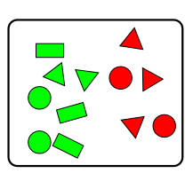
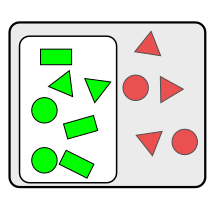
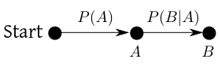
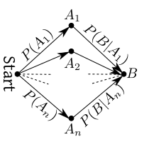
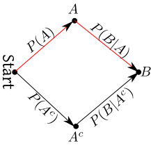
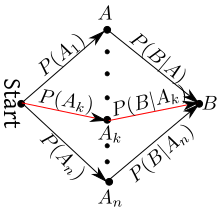
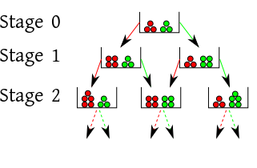

EXERCISE: Consider a single roll of a fair die. Write down three distinct pairs $A,B$ of events such that $A,B$ are independent. Also, write down three distinct pairs $C,D$ of events that are dependent.
When you have more than two events, the definition of independence becomes a bit counter-intuitive. This may look scary. But it only means that if you any number of the $A_i$', say $A_1, A_4$ and $A_7,$ then their probabilities multiply: $P(A_1\cap A_4\cap A_7) = P(A_1)P(A_4)P(A_7).$ Notice that it is not enough to have each pair $A_i,A_j$ to be independent according to the first definition. Indeed, this case has a special name, pairwise independence: "Mutual independence" is what we intuitively feel when we think that the occurencess of $A_1,...,A_n$ do not influence each other. The following interesting example shows why pairwise independence is not enough.EXAMPLE: Consider the random experiment where a fair coin is tossed thrice. Let, for $i\neq j\in\{1,2,3},$ $A_{ij}$ be the event that the $i$-th and $j$-th tosses have the same outcome. Do you intuitively feel that $A_{12}, A_{23}$ and $A_{13}$ are "independent"? Now check if they are pairwise independent. Also check if they are mutually independent.
SOLUTION: Since the solution is very easy, why not try yourself first, before clicking here?EXAMPLE: Can you give three events $A,B,C$ such that $P(A\cap B\cap C) = P(A)P(B)P(C)$ but still $A,B,C$ are not mutually independent?
SOLUTION: Use the fact $P(\phi)=0$ to get a trivial such example.EXAMPLE: Here is a box full of shapes.
|  |
|---|
| A box of shapes |
|  |
|---|
| Narrowed sample space |
EXERCISE: Show that if $P(A)>0$ then $P(A\cap B) = P(A)P(B|A).$
This result is just a minor rearrangement of the definition. But it has an intuitive interpreation. $A\cap B$ means both $A$ and $B$ has happened. We are finding it probability in two steps: first the probability that $A$ has happened, $P(A).$ Then, $P(B|A),$ the conditional probability that $B$ has happened given that $A$ has happened. This is often represented diagrammatically:|  |
|---|
EXAMPLE: A box contains 5 red and 3 green balls. One ball is drawn at random, its colour is noted, and is replaced back. Then one more ball of the same colour is added. Then a second ball is drawn. What is the probability that both the balls are green?
SOLUTION: Notice that the randomness enters in two stages, since there are two random selections involved. Let $A$ be the event that the first ball is green, and $B$ be the event that the second ball is green. We are to find $P(A\cap B) = P(A)P(B|A).$ What is the probability that the first ball is green? The answer is $P(A) = \frac 38.$ Before drawing the second ball, the composition of the box has changed depending on the outome of the first stage. This is where conditional probability helps. Given that the first ball was green, we know the composition of the box before the second drawing: 5 red and $3+1=4$ green. So $P(B|A) = \frac 49.$ The final answer therefore is $\frac 38\times\frac 49 = \frac 16.$ Often, in case of multistage random experiments, it is easier to think about the diagram than about te definition of conditional probability.Proof: $\bc A_1\cup\cdots\cup A_n=S,$
$\tf B = B\cap S = (B\cap A_1)\cup\cdots\cup (B\cap A_n).$ Also, since $A_i$'s are disjoint, hence $B\cap A_i$'s are disjoint as well. So $P(B) = \sum_1^n P(B\cap A_i) = \sum_1^n P(A_i) P(B| A_i),$ as required. [QED] The diagrammatic way of remembering this is as shown below.|  |
|---|
| Theorem of total probability |
Proof: First think of the formula in terms of the following diagram. The denominator is the probability of reaching $B$ from Start. The numerator is the probability of only the red path.
|  |
|---|
EXERCISE:Look at the following diagram and write down the proof.
|  |
|---|
| More general form of Bayes' theorem |
EXAMPLE: An urn contains 3 red and 3 green balls. One ball is drawn at random, its colour noted, and returned to the urn. Then another ball of the same colour is added to the urn. Then the same process is repeated again and again. The possibilities grow like this:
|  |
|---|
EXAMPLE: Most people form their opinions based on random personal experience, instead of a carefully planned overall survey of a situation. Polya's urn model is a simple version of this.
An American lady comes to India. She has heard about the unheigenic condition prevaling here, and is apprehensive about flu. Well, as luck would have it, on her way from the air port she meets a man suffering from flu. "Oh my," she shudders, "so the rumour about flu is not unfounded, it seems!". The very next day her city tour is cancelled, because the guide is down with flu. "Oh boy, what a terrible country this is. It is full of flu!" the lady starts to worry. So imagine her panic when on the third day she learns that waiter in the hotel has caught the disease. Now here is the story of another American visitor to our country. He is also apprehensive of flu. But one the first day he does not meet any flu-case. "May be this fear of flu in India is a rumour after all," he thinks with some relief at the end of the day. The next day passes, and still he does not meet a single person with flu. He is now quite confident that the apprehension about flu is not serious. When yet another day further supports his optimistic belief, he starts thinking that the expensive flu-vaccine he took back home was a wastage of money. Which of these view points is reasonable? Neither. They both formed their own ideas based on their persoal random experience. The prevalence of flu is the same for both of them, but their personal beliefs about it are dratically different. Polya's urn model captures this idea. Red ball means fear of flu, green ball means the opposite. Initially the were equal in number. The lady met a flu case on day 1 (i.e., randonly selected a red ball), and her fear deepened (one more red ball added). The man did not meet any flu case in day 1 (green ball selected), so his courage increased (one more green ball added). Yet, what is the chance of selecting a red ball at stage 1? It is still $\frac 12$ as before (ie, the true prevalence rate of flu has not changed from stage 0). This model also demonstates a common phenomenon: once you randomly select balls of a certain in the first few stages, the (conditional) probability of selecting more balls of that colour increases. Indeed, people who has met more good people in their childhood tend to see more good peple around them. Similarly, people who has met more bad people are more likely to grow suspicious of everybody. However, one must understand that the real situation is too complex to be captured adequately by Polya's urn model.EXAMPLE: We have $N+1$ urns, labelled $0,1,...,N.$ The urn with label $k$ contains $k$ red and $N-k$ green balls. One urn is selected at random, and an SRSWR of size $N$ is drawn. All the $N$ balls are found to be red. One more ball is drawn from the same urn. What is the conditional probability that this ball is also red?